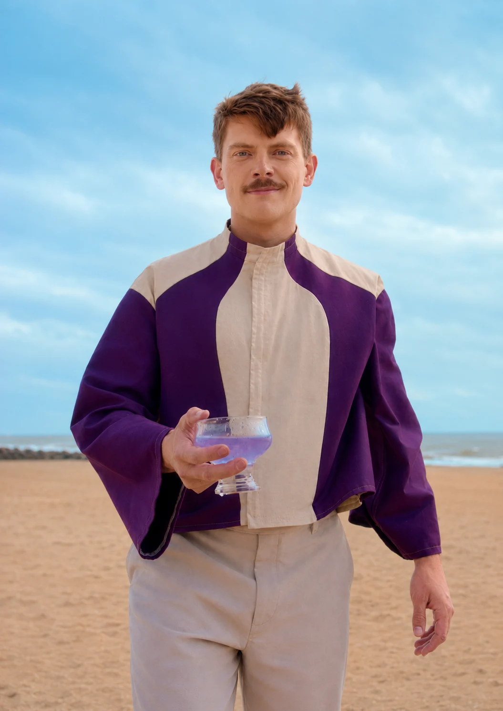
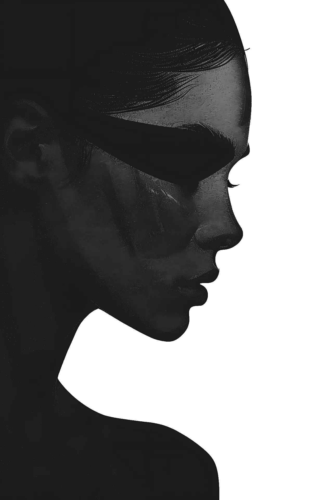

Dans les coulisses de cette histoire

Le making of du court-métrage
Le synopsis
Une histoire en cinq chapitres — du paradis retrouvé au plus troublant des secrets.
Chapitre I
La Pointe Rose est une île d'apparence idyllique. Pour se sauver des ravages du réchauffement climatique, des hommes se sont réfugiés sur cette île et ont fondé une nouvelle société avec un mode de vie bienveillant et paisible.
Dans ce monde où la technologie permet aux humains de vivre en harmonie avec la nature, chacun utilise ses compétences pour le bien commun. Des montagnes aux littoraux, les habitants, libres et sans pensées négatives, profitent de cet environnement serein.


Chapitre II
C'est dans cet environnement protégé qu'Altéa, boulangère d'un petit village à l'ouest de l'île, a mis au monde son unique enfant : Tana.
Aujourd'hui, Tana a grandi et tout comme ses concitoyens, elle savoure une vie agréable. Journaliste depuis près de dix ans, elle écrit quotidiennement sur la vie de l'île, dernier foyer de l'humanité. Passionnée par son métier, Tana est connue de toute la société Pontérosaine.
Chapitre III
Ce jour-là, comme chaque matin, Tana commence sa journée chez Marcel, son café préféré. Mais ce matin-là, elle aperçoit un homme étrange passer devant elle, dans la rue. L'homme laisse tomber un journal. Voulant le rendre à son propriétaire, Tana s'empresse d'aller récupérer le papier. Mais vingt mètres plus loin, l'homme est tombé au sol. Sans même lui laisser le temps de comprendre la situation, un service médical aidé de plusieurs inconnus est déjà venu secourir l'homme qui a fait un malaise.
Rassurée de le savoir pris en charge, Tana prend alors le temps de regarder le journal de l'inconnu. Il ne ressemble en rien à tous les journaux qu'elle connaît.
« Plastique », « violence », « guerre »…
des mots qui lui sont parfaitement inconnus.
Chapitre IV
Pour essayer d'en comprendre le sens, Tana entreprend de nombreuses recherches, en vain. Qui est cet homme qui a fait le malaise ? D'où vient ce journal ? Qui l'a écrit ? Malgré des recherches poussées, elle, la journaliste pourtant renommée, ne parvient pas à trouver la moindre information sur cet étrange document.
Toute cette histoire hante de plus en plus Tana, mais plutôt se taire que de risquer de passer pour folle. Elle se referme sur elle-même. Elle se coupe du monde. Et progressivement, elle sombre lentement dans le cercle vicieux de la déviance, cette maladie bien connue sur La Pointe Rose, qui affecte dangereusement les pensées positives de ceux qui en sont atteints.
Mais Tana est très entourée. Avec le soutien de sa famille et de ses amis, notamment de sa mère et de son patron et ami, Franklin, elle prend conscience de sa maladie et se rend au Cabinet des Déviants pour obtenir un traitement : un appareil qui se pose sur l'oreille et inhibe les fonctions neuronales du noyau caudé, cette zone du cerveau qui génère les fameuses pensées négatives.
Après plusieurs semaines de traitement et de repos, Tana reprend progressivement son activité et rédige son prochain article : « Mon parcours contre la Déviance ». Cette confession publique est un succès. Tana devient rapidement la personne la plus admirée de La Pointe Rose.
Chapitre V
Dès que ses rendez-vous médicaux et son travail lui laissent un peu de temps libre, Tana se rend dans sa maison de famille, à une demi-heure de marche de la mer. Ce retour aux sources lui permet de profiter du cadre idyllique du lieu — mais c'est aussi l'opportunité, pour elle, de reprendre, dans le plus grand secret, ses recherches sur le mystérieux journal.
La suite s'écrira dans le long-métrage…
Dans les coulisses de cette histoire
Le making of du court-métrage